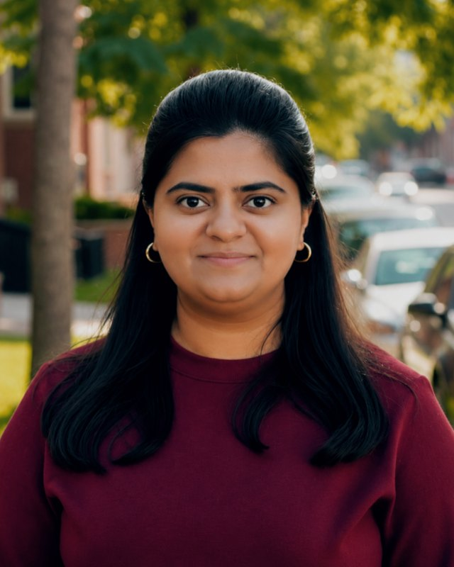

Based in Dallas and open to relocating. Looking for technical program manager roles in AI.
Kanka Kulkarni
I keep complex programs moving, from first ask to go-live.
I lead cross-functional delivery on enterprise platform programs at Tango Analytics: governance, UAT, change control and go-live readiness. Hands-on with AI, I build agents that cut program overhead.

The road so far
- Education
- Work
- Research
Select any bar to read the details.
How I run programs
Scope before speed
Turn ambiguous asks into approved, testable scope — requirements, impact assessments, estimates and sign-off through a disciplined change-order process.
Governance that surfaces risk early
A steady cadence of cross-functional status, RAID and change-control tracking, and CIO and Steering Committee reporting, so leadership sees risks, decisions and dependencies before they bite.
Launch readiness, not hope
UAT run with owner- and source-level defect reporting, a P0–P2 go-live priority model, and dashboards that make status obvious at a glance.
Automate the overhead
Internal AI tools for meeting intake, change-order generation and daily email follow-up, so the team spends its time on delivery instead of paperwork.
Journey
Select an entry for details.
Education
Experience
Projects and research
Expertise
Tools I use every day: